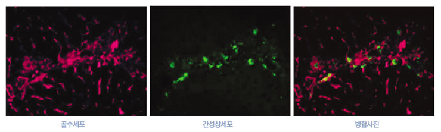
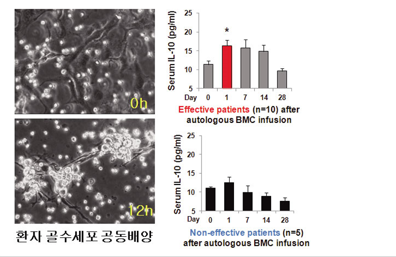

연구성과 10선
연구성과 10선
KAIST RESEARCH ACHIEVEMENTS
자신의 골수세포로 중증 간경변
치료가 가능해진다.
의과대학원 정원일
요약
세계적으로 2033년에는 간염바이러스에 대한 간경변 발생은 현저히 감소되었으나 만성음주와 식생활의 변화에 따른 알코올성 및 비알코올성 간경변 환자들이 전 연령에 거쳐 급속도로 증가한다. 이때 환자들은 개발된 ‘자가 골수세포 치료법’을 이용하여 손쉽게 치유할 수 있게 되어 간경변에 따른 사회적 및 경제적 지출액이 크게 감소하며 전 세계의 많은 외국인들이 간경변 치료와 의료관광을 위해 한국을 방문하게 된다. 지금까지 기전이 불분명했던 ‘자가 골수세포 치료법의 효능을 입증한 것’으로 이 연구는 바이오메디컬 연구에서 가장 중요한 기초와 임상 연구를 접목한 ‘대표적인 중개연구(translational research)’로써 카이스트 의과학대학원의 설립취지와 맞물리는 성공적인 사례이다. 이 치료법의 시술로 인해 국민의 보건 복지의 증진과 막대한 사회적 및 경제적 이익이 있을 것으로 전망된다.
연구내용
지금까지 기전이 불분명했던 ‘자가 골수세포 치료법의 효능을 입증한 것’으로 이 연구는 바이오메디컬 연구에서 가장 중요한 기초와 임상 연구를 접목한 ‘대표적인 중개연(translational research)’로써 카이스트 의과학대학원의 설립취지와 맞물리는 성공적인 사례이다. 이 치료법의 시술로 인해 국민의 보건 복지의 증진과 막대한 사회적 및 경제적 이익이 있을 것으로 전망된다. ‘간경변증’은 간염바이러스 또는 알코올 등에 의한 간손상시 간성상세포들이 비정상적으로 콜라겐을 분비해서 간이 딱딱해지는 것을 말한다. 이 질병은 전 세계적으로 높은 사망률을 보이는 질환으로써 치료약이 개발돼 있지 않다. 따라서 환자들은 간 이식을 통해 수명을 연장할 수 있으나 공여간의 부족, 높은 수술비용 그리고 면역억제제 부작용 등의 어려움이 있었다. 이에 반해 ‘자가 골수세포 치료법’은 부작용이 없고, 자기 몸에서 쉽게 얻어낼 수 있으며, 간이식보다 훨씬 더 저렴한 장점이 있으나 그 효능이 불분명하여 치료에 널리 이용되지 못하고 있는 실정이어서 연구가 시급히 요구되었다.
동물실험
연구팀은 간경변을 가지고 있는 마우스에 녹색형광을 발현하는 골수세포를 주입한 결과 24시간 내에 주입된 골수세포들이 간으로 이동을 하여 활성화된 간성상세포들(붉은색)과 상호작용을 한 후 항섬유화 기능을 하는 인터류킨-10을 강 하게 분비하여 간성상세포들의 콜라겐 분비가 억제됨을 확인하였다. 또한 다양한 골수세포들 중 CD11b와 Gr1을 발현하는 특정 골수세포군들이 인터류킨-10을 주로 분비하며, 이들에 의해 간내 염증을 억제하는 조절 T세포가 증가하였다. 그러나 인터류킨-10이 결핍된 마우스의 골수세포들에서는 그 효능을 찾아볼 수 없었다.

임상실험
동물실험에서처럼 환자의 골수세포와 인간유래 간성상세포간의 상호작용 실험에서 공동배양 후 골수세포들에서 인터류킨-10의 분비가 증가하는 것이 관찰되었다. 임상시험에서도 자가 골수세포를 투여한 간경변 환자들이 24시간 이후부터 혈중 인터류킨-10이라는 생체물질이 증가하는 것이 관찰되었다. 또한 임상시험결과 간경변 환자 15명중 10명의 증상이 호전되는 것이 관찰되어 간경변 환자들을 치료할 수 있는 길이 열리는 근거를 제시했다.

결론
주입된 골수세포들은 24시간 이내 간으로 이동하여 콜라겐을 분비하는 활성 간성상세포와 상호작용을 한 후 인터류킨-10을 분비하여 간성상세포들의 콜라겐 분비를 직접적으로 억제할 뿐만 아니라 간접적으로 간내 염증을 억제하는 조절 T세포를 증가시켜 결과적으로 간경변을 치유하게 된다.

연구비 지원
본 연구는 2011년도 정부(과학기술부)의 재원으로 한국과학재단(No. 2011-0029328) 및 보건복지부 보건의료연구개발사업(A111345, A111498)의 지원을 받아 수행한 연구임.
연구실적
- 2012년도 "국내 바이오 성과 중 의학적으로 영향력이 큰 연구성과 Top 5 선정"
- CD11b+Gr1+ bone marrow cells ameliorate liver fibrosis by producing interleukin-10 in mice. Hepatology. 2012 Nov;56(5):1902-12.
- 뉴스보도: MBC, KBS, SBS, YTN 등 저녁9시 주요 뉴스 및 다수의 신문보도
- 국제학회 수상 1회(ISALPD/C), 국제학회 초청발표 2회(미국, 일본), 국내학회 초청발표 3회, 한국분자 · 세포생물학회 블루리본 강연 선정